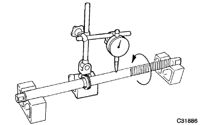
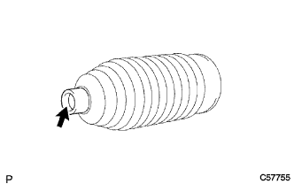
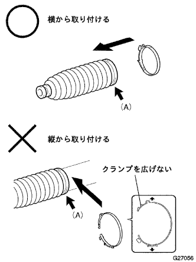

パワーステアリング リンクASSY 組み付け |
| 1. パワーステアリングラックハウジングオイルシール取り付け |
新品のラツクハウジングオイルシールのリップ部にパワーステアリングフルードを塗布する。
ラツクハウジングオイルシールをラツクハウジングに斜めに取り付ける。
SSTを使用して、ラックハウジングオイルシールが2箇所のポート部を通過するまで手で押し込む。
 |
ラツクハウジングオイルシールが下側のポートを通過後、SST(09631-00190)を図のように裏返して取り付け、水平になるまで手で押し込む。
SSTおよびプレスを使用して、ラツクハウジングオイルシールを水平にした状態でラツクハウジングに当たるまで圧入する。
ニードルノーズプライヤーを使用して、新品のラツクブシユをラックハウジングRH側に取り付ける。
| 2. パワーステアリングラック点検 |
|  |
歯面の摩耗および損傷を点検する。
Ｖブロックおよびダイヤルゲージを使用して、ステアリングラツクの曲がりを点検する。
| 3. ラックステアリングピストンリング取り付け |
新品のピストンリングおよびOリングに、パワーステアリングフルードを塗布する。
Oリングをステアリングラツクに取り付ける。
 |
ピストンリングを指でしごいて取り付けやすいように拡張させる。
ピストンリングをステアリングラツクに取り付ける。
 |
ホースクランプおよびバキユームホースを使用して、拡張したピストンリングを縮ませる。
| 4. パワーステアリングラック取り付け |
 |
ラツクカバーチユーブが歯面およびポートを覆う状態でラック先端より約30ｍｍ長くなるように切断する。
新聞紙程度の厚さの紙をステアリングラックの歯面を覆う幅でラツクカバーチユーブと同等の長さに切断する。
ステアリングラツクの歯の谷部にシャシーグリーススペシャルを充てんする。
ステアリングラツク歯面を覆うように紙をセットする。
ラツクカバーチユーブを図のような折り目方向でポートを覆う位置まで挿入する。
 |
歯の背面側を利用して、図のようにステアリングラツクをドライヤーの吹き出し口に斜めに当てて、ラツクカバーチユーブ内のエアをB側へ押し出すようにドライヤーを移動させてA部からB部までラツクカバーチユーブを収縮させる。
ラツクカバーチユーブのみ180°回転させる。
歯の背面を利用して、ラツクカバーチユーブを収縮させる。
紙を抜き取る。
ステアリングラツクを回しながら先端C部のみを十分暖めて、素早くラツクカバーチユーブをねじりながらラツクエンドのねじ穴に押し込む。
先端に突起、エッジのないことを確認する。
ラツクカバーチユーブ表面に傷などないことを確認する。
ステアリングラツクのラツクカバーチユーブおよびピストンリングにパワーステアリングフルードを塗布する。
ステアリングラツクをラツクハウジングに付け、ラツクカバーチユーブを取りはずす。
| 5. シリンダエンドストッパ取り付け |
ステアリングラツクのLH側に保護テープを巻き、パワーステアリングフルードを塗布する。
新品のシリンダチユーブオイルシールのリップ部に、パワーステアリングフルードを塗布する。
 |
ラツクハウジングのＬＨ側にシリンダチユーブオイルシールを取り付ける。
保護テープをステアリングラツクから取りはずす。
 |
シリンダエンドストツパ内面のブシュに傷がないことを確認する。
シリンダエンドストツパ内面のブシュに、シャシーグリーススペシャルを塗布する。
SSTおよびハンマーを使用して、ホールスナツプリング取り付け溝が見えるまで、シリンダエンドストツパを挿入する。
| 6. シリンダエンドストッパホールスナップリング取り付け |
 |
SSTを使用して、新品のホールスナツプリングを取り付ける。
| 7. パワーステアリングラックハウジング気密点検 |
 |
SSTおよびマイティバッグを使用して、58ｋPa{400ｍｍHg} の負圧をかけ、約30秒間保持したとき、指針に変化のないことを確認する。
| 8. パワーステアリングコントロールバルブスペーサ取り付け |
 |
スライディングＴハンドルおよびハンマーを使用して、新品のコントロールバルブスペーサ2個を軽く打ち込む。
| 9. パワーステアリングコントロールバルブアッパベアリング取り付け |
 |
新品のコントロールバルブアッパオイルシールのリップ部にＭＰグリースNo.2を塗布する。
SSTおよびプレスを使用して、コントロールバルブアツパオイルシールを圧入する。
 |
SSTおよびプレスを使用してコントロールバルブアツパベアリングを圧入する。
| 10. パワーステアリングコントロールバルブリング取り付け |
新品のコントロールバルブリング4個に、パワーステアリングフルードを塗布する。
|
コントロールバルブリングを指でしごいて取り付けやすいように拡張させる。
コントロールバルブリング4個をコントロールバルブに取り付け、手で押えてなじませる。
ホースクランプおよびバキュームホースを使用して、拡張したコントロールバルブリングを縮ませる。
| 11. パワーステアリングコントロールバルブ取り付け |
 |
コントロールバルブのセレーション部に保護テープを巻く。
コントロールバルブアツパオイルシールにパワーステアリングフルードを塗布する。
プレスを使用して、コントロールバルブをコントロールバルブハウジングに取り付ける。
 |
ピニオンの歯の谷部およびラツクハウジング内のニードルローラーベアリング部にシャシーグリーススペシャルを塗布する。
新品のガスケットをコントロールバルブハウジングASSYに取り付ける。
 |
合わせマークを合わせて、ボルト2本でコントロールバルブASSYを取り付ける。
| 12. パワーステアリングラックガイド取り付け |
 |
ステアリングラツクおよびラックハウジングとの接触面に、シャシーグリーススペシャルを塗布する。
ラツクガイドをラツクハウジングに取り付ける。
スプリングキャップおよびラツクハウジングのねじ部を清掃する。
ラツクガイドスプリングをラツクハウジングに取り付ける。
スプリングキヤツプのねじ部にアドヘシブ1344を塗布して、仮締めする。
ステアリングラツクとコントロールバルブを噛み合わせる。
 |
ストレートヘキサゴンレンチ21を使用して、スプリングキヤツプを取り付ける。
| 13. 総合プレロード点検 |
 |
左右のラックエンドをステアリングラックに仮付けする。
SSTを使用して、ステアリングラツクを１－２回フルストロークさせ、ステアリングラツクをなじませる。
SSTを使用して、総合プレロードを点検する。
左右のラツクエンドをステアリングラツクから取りはずす。
| 14. ステアリング ラック エンド取り付け |
 |
新品のクローワッシャー2個を、左右のラツクエンドの切り欠きにツメを合わせて取り付ける。
ラツクエンド2個を仮付けする。
ラツクエンドのボールジョイント部にＭＰグリースNo.2を充てんする。
 |
SST2個を使用して、左右のラツクエンドを締め付ける。
アルミ板を介して、ラツクエンドのボールジョイント部をバイスに固定する。
 |
ブラスバーおよびハンマーを使用して、左右のクローワッシャーをかしめる。
| 15. ステアリングラックエンド通気穴点検 |
 |
針金をラツクエンドの通気穴に約30ｍｍ挿入し、詰まりのないことを点検する。
| 16. ステアリングラック ブーツ NO.2取り付け |
|  |
ラツクブーツNo.2の小径内側にラバーグリースを塗布する。
|  |
ラツクブーツNo.2の大径口側に新品のブーツクランプNo.2を図の矢印(A)に仮付けする。
ラックブーツNo.2をラックハウジングの溝に取り付ける。
| 17. ステアリングラック ブーツ NO.1取り付け |
| 18. ステアリングラックブーツ クランプ NO.2取り付け |
 |
プライヤーおよびマイナスドライバーを使用して、ブーツクランプＮｏ．２を取り付ける。
| 19. ステアリングラックブーツ クランプ NO.1取り付け |
| 20. ステアリングラックブーツ クリップ取り付け |
 |
プライヤーを使用して、左右のクリップを図の範囲に取り付ける。
SSTを使用して、コントロールバルブを回転させたとき、左右のラックブーツがスムースに伸縮することを確認する。
| 21. タイロッド エンドSUB-ASSY LH点検 |
 |
アルミ板を介して、タイロツドエンドLHのボールジョイント部をバイスに軽く固定する。
キャッスルナットを仮付けする。
ボールジョイントを5往復回転させる。
トルクレンチをナットにセットして、1回転／３-5秒の速度で連続してボールジョイントを回転させ、5回目の回転トルクを点検する。
| 22. タイロッド エンドSUB-ASSY RH点検 |
| 23. タイロッド エンドSUB-ASSY LH取り付け |
 |
ロックナットおよびタイロツドエンドLHを合わせマークの位置までねじ込み、ロックナットを仮締めする。
| 24. タイロッド エンドSUB-ASSY RH取り付け |
| 25. ステアリングレフトターンプレッシャチューブ取り付け |
 |
ユニオンナットレンチ12を使用して、レフトターンプレツシヤチユーブを取り付ける。
| 26. ステアリングライトターンプレッシャチューブ取り付け |